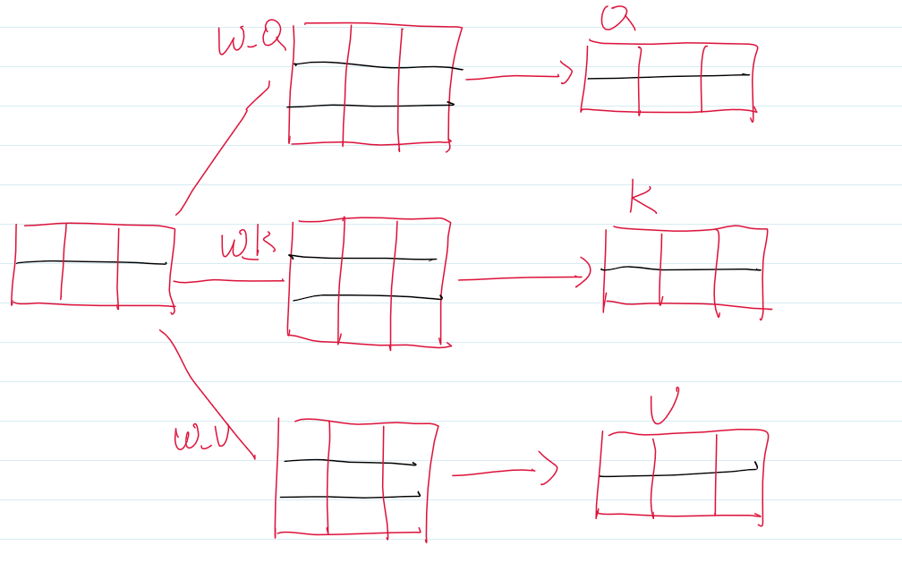
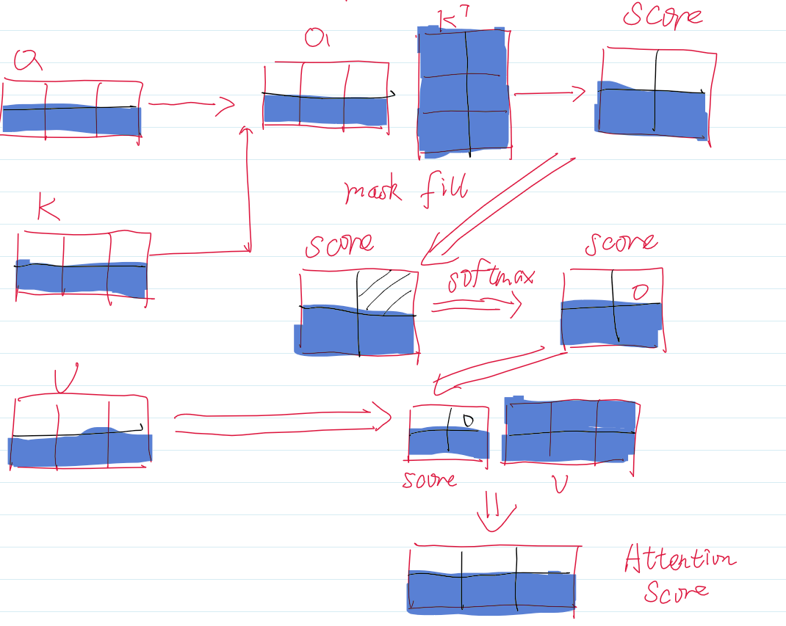
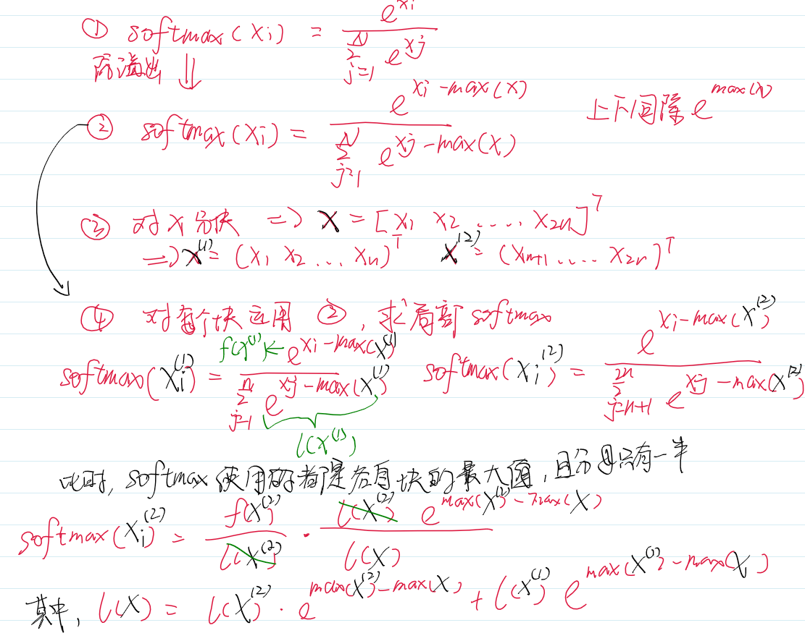

本篇文章会总结我学习推理优化的笔记。
KV cache
首先回顾Attention的计算。经典的Self-Attention公式是： \[ Attention = Softmax(\frac{QK^T}{\sqrt d})V \]
我们从起始开始，详细介绍在进行注意力机制计算前所需要的变量，经过分词的序列输入到Embedding层，得到Emb的结果。我们这里把Batch设为1，并忽略batch维度、\(\sqrt d\)与Splithead过程，Sequence=2，d_model = 3。
Emb变量经过Q,K,V各自的投影矩阵，得到Q,K,V。

之后计算Attention分数。
而生成式的大模型是根据当前的最后一个token来预测下一个token。所以并不需要之前的Q，而之前的K与V在计算已经生成的token时也计算完毕了，这时候只需要拼接上新的K与V，然后用当前token的Q计算Attention分数就可以了。
我们以一个例子来说明情况，假设我们要生成第三个token，那就是根据第二个token来预测。假设我们缓存了K与V，那么只有阴影部分发生了计算。其余的空白部分中，均是之前就计算好的，那为了避免重复的运算，我们可以将他们缓存下来，之后将新的K,V与之前的K,V拼接就行了。

这里纠正一个问题，KV Cache严格意义上并不是decoder-only的专利，而是自回归模型的专利。T5并非Decoder-only的模型，但T5明确实现了KV Cache。
def project(hidden_states, proj_layer, key_value_states, past_key_value):
"""projects hidden states correctly to key/query states"""
if key_value_states is None:
# self-attn
# (batch_size, n_heads, seq_length, dim_per_head)
hidden_states = shape(proj_layer(hidden_states))
elif past_key_value is None:
# cross-attn
# (batch_size, n_heads, seq_length, dim_per_head)
hidden_states = shape(proj_layer(key_value_states))
if past_key_value is not None:
if key_value_states is None:
# self-attn
# (batch_size, n_heads, key_length, dim_per_head)
hidden_states = torch.cat([past_key_value, hidden_states], dim=2) #应该不能再明显了
elif past_key_value.shape[2] != key_value_states.shape[1]:
# checking that the `sequence_length` of the `past_key_value` is the same as
# the provided `key_value_states` to support prefix tuning
# cross-attn
# (batch_size, n_heads, seq_length, dim_per_head)
hidden_states = shape(proj_layer(key_value_states))
else:
# cross-attn
hidden_states = past_key_value
return hidden_states
# get query states
query_states = shape(self.q(hidden_states)) # (batch_size, n_heads, seq_length, dim_per_head)
# get key/value states
key_states = project(
hidden_states, self.k, key_value_states, past_key_value[0] if past_key_value is not None else None
)
value_states = project(
hidden_states, self.v, key_value_states, past_key_value[1] if past_key_value is not None else None
) 让我们回顾为什么可以用KV Cache，因为自回归模型只需要当前token的Q，而之前的K与V都被计算过了，只需要cat新的KV上去。而T5的Decoder由三部分组成：Self-Attention、Encoder-Decoder Attention和Feed-Forward Network。其中Self-Attention的Q,K,V都来自于Decoder上一个Layer的输出，这里显然可以用KV Cache。而Encoder-Decoder Attention中的Q来自于Self-Attention经过Norm的输出，而KV均来自于Encoder，这些早就计算完了，所以也能缓存。
而在Decoder-only中以GPT-2为例子，实现的代码如下：
query = self._split_heads(query, self.num_heads, self.head_dim)
key = self._split_heads(key, self.num_heads, self.head_dim)
value = self._split_heads(value, self.num_heads, self.head_dim)
if layer_past is not None:
past_key, past_value = layer_past
key = torch.cat((past_key, key), dim=-2)
value = torch.cat((past_value, value), dim=-2)MQA
GQA
FlashAttention
Transformer的计算主要在于Attention的计算，在decoder-only中大多数是Self-Attention。 \[ \begin{align} S &= QK^T∈R^{s×s} \tag{1} \\ P &= Softmax(S) ∈ R^{s×s} \tag{2}\\ O &= PV ∈R^{s×d} \tag{3} \end{align} \] 其中s是序列长度，d是d_model，也就是Embedding的维度。(1)也被成为Attention Score，(2)被称为Attention Weight
可以看出主要的计算复杂度在于第一步与第三步的两个大矩阵乘法，需要有\(s^2\)次内积，每一次内积有\(d\)次乘法，由于加法比乘法快得多，这里的计算复杂度只统计乘法操作。所以Attention的计算复杂度为\(O(ds^2)\)。
算子主要有两类，一种是计算密集型，一种是访存密集型。计算密集型的耗时主要在计算本身，如超大size的矩阵乘法，大channel的卷积运算。而访存密集型的主要开销在于对存储的读写，计算本身非常简单。如逐元素操作(ReLU,Dropout)，Reduce操作(Softmax,Norm,Sum)。
原文中将GPU的存储分为了SRAM与HBM，SRAM的读写速度最快且远快于HBM。假设一开始的QKV都在HBM中，那么一次完整的Attention大体需要：
将Q,K矩阵取到SRAM，运算，写入S到HBM中，三次。
取出S到SRAM，计算Softmax P，放回P到HBM，两次。
取出P与V，写入O，三次。
为了减少对HBM的读写，FlashAttention将矩阵分块送进SRAM，分块进行矩阵运算与Softmax运算。矩阵本身就能分块乘法，重点在于Softmax的分块。

所以是先计算第二块，再计算第一块的Softmax。其实就是先保存第一块的局部变量，然后计算第二块的全局Softmax，再用第二块计算使用的全局变量更新第一块。在实际实现中，最后一块的Softmax是最先被计算出来的，然后使用中间变量逐步向前更新。
关于(1)与(3)的矩阵分块乘法部分就不赘述了，主要是理解前向Softmax分块计算的过程。
最终的实现大体是，先根据SRAM的大小决定矩阵应该如何分块，然后将QKV以及初始化的矩阵O都分块。外循环遍历KV，内循环遍历Q。内循环中，计算分块后的\(Q_iK_i^{T}\)，也就是分块Attention Score，然后计算分块Softmax。
PageAttention
待更